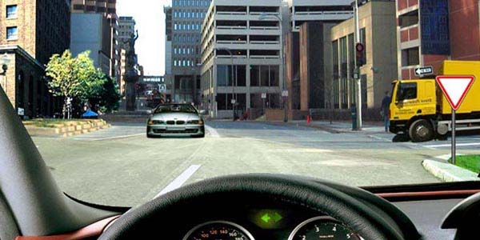
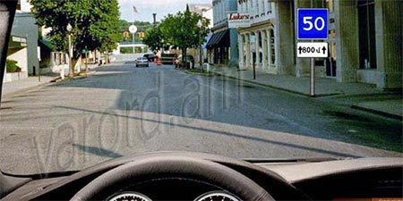
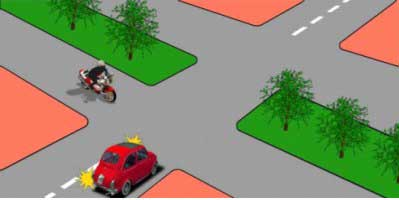
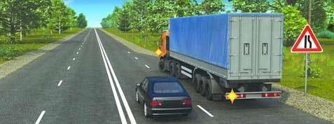
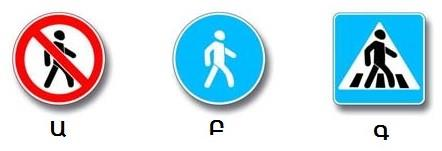
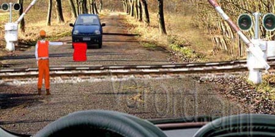
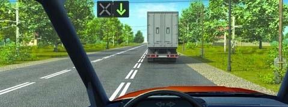
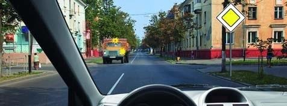
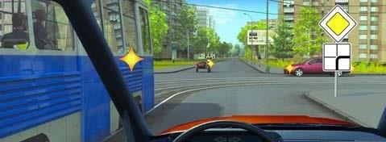
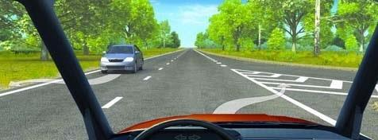

Թեստ 55
30:00
1. Նշվածներից ո՞ր անշարժ օբյեկտը արգելք չի հանդիսանում
2. «Ճանապարհային երթևեկության անվտանգության ապահովման մասին» ՀՀ օրենքի համաձայն` օրվա մութ ժամանակ է համարվում`
3. Ավտոբուսների շահագործումն արգելվում է, եթե՝
4. Տրանսպորտային միջոցների շահագործումն արգելվում է, եթե`
5. Եթե մտադիր եք խաչմերուկում կատարել հետադարձ, ո՞ր տրանսպորտային միջոցին պետք է զիջեք ճանապարհը:

6. Ի՞նչ են ցույց տալիս նշված ճանապարհային նշանները:

7. Վարորդներից ո՞րն ունի առաջնահերթ երթևեկության իրավունք:

8. Ի՞նչ նշանակություն ունի լուսացույցի կլոր կանաչ թարթող ազդանշանը:
9. «Կանգ» գծից կամ «երթևեկությունն առանց կանգառի արգելվում է» նշանից ինչ հեռավորության վրա պետք է կանգնեցվի տրանսպորտային միջոցը` մոտեցող գնացքին ճանապարհը զիջելու համար:
10. Ճանապարհը պետք է զիջի

11. Ո՞ր նշանով է նշվում հետիոտնային արահետը

12. Նշված վայրերից ո՞րտեղ կարելի է կանգառ կատարել
13. Տրանսպորտային միջոցի վրա բեռը տեղաբաշխվում և անհրաժեշտության դեպքում նաև ամրացվում է այնպես, որպեսզի`
14. Թույլատրվու՞մ է արդյոք խաչմերուկում կատարել տրանսպորտային միջոցների վազանց` հատվողի նկատմամբ գլխավոր համարվող ճանապարհի վրա:
15. Տվյալ իրավիճակում թույլատրվու՞մ է անցնել երկաթուղային գծանցը:

16. Մուտք գործել դարձափոխային երթևեկության գոտի այս իրավիճակում

17. Խաչմերուկն ուղիղ անցնելիս պարտավոր ենք արդյո՞ք զիջել ճանապարհը միացված դեղին առկայծող փարոսիկներով բեռնատարի վարորդին

18. Այս իրադրությունում ճանապարհը պետք է զիջեք

19. Ո՞ր վարորդին է կանգառ կատարելու դեպքում թույլատրված հատել հոծ գծանշումը
